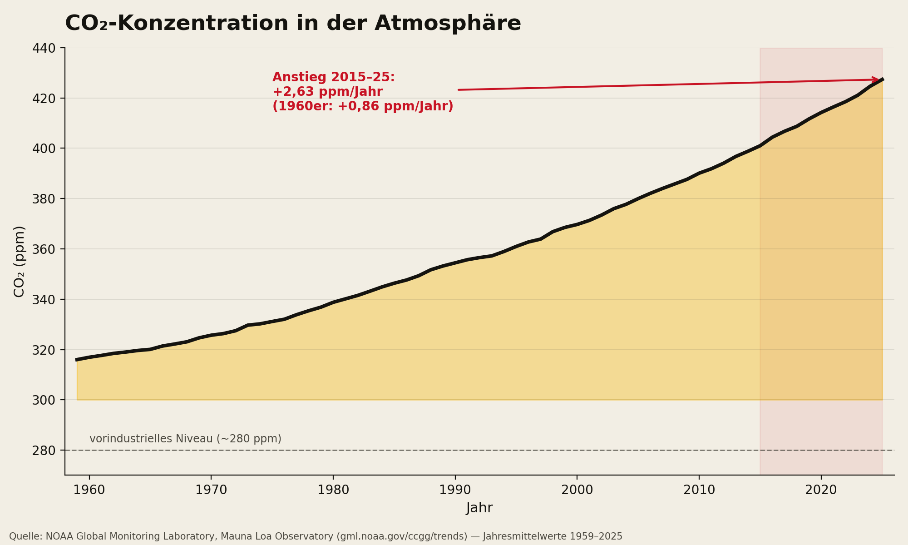
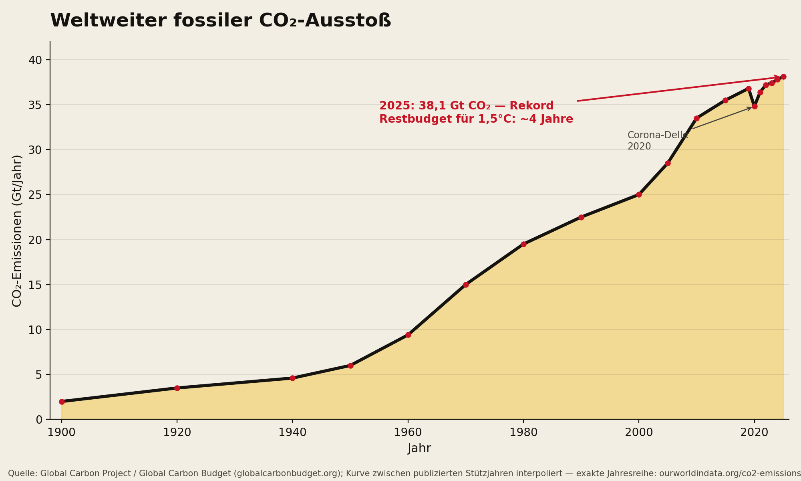
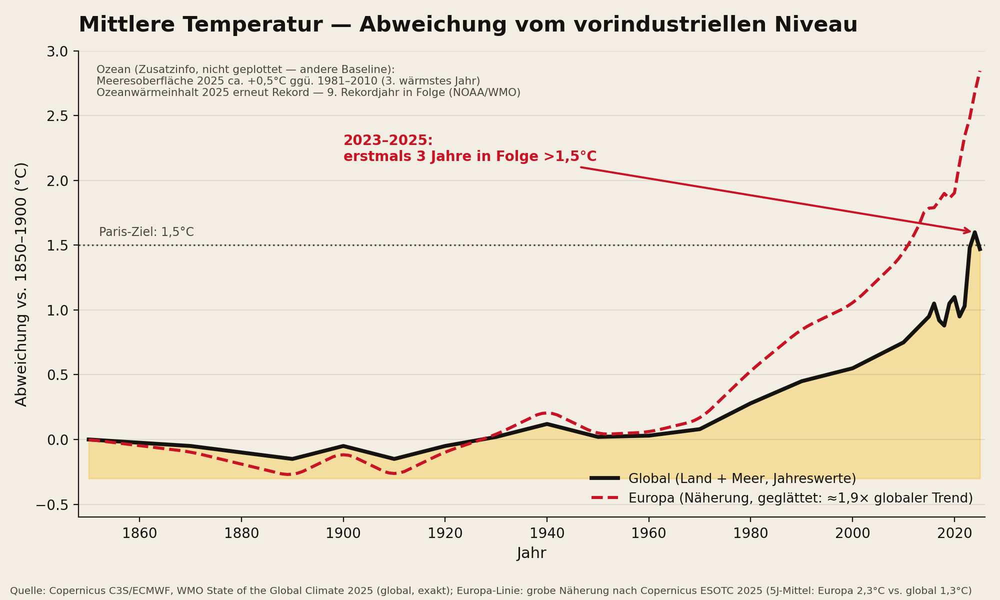
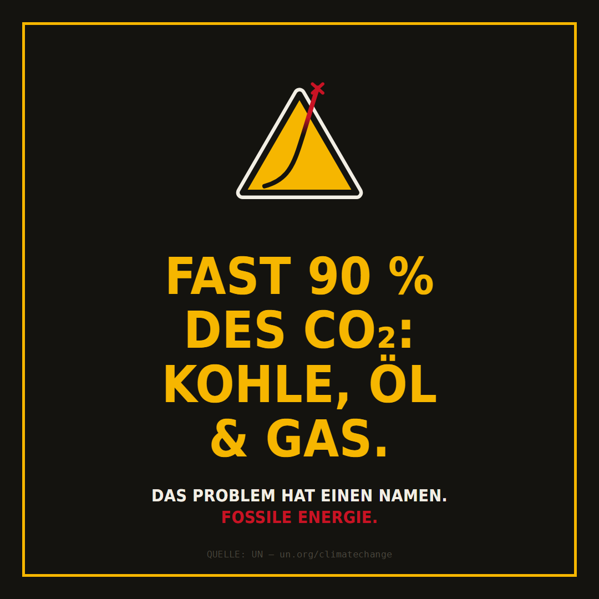
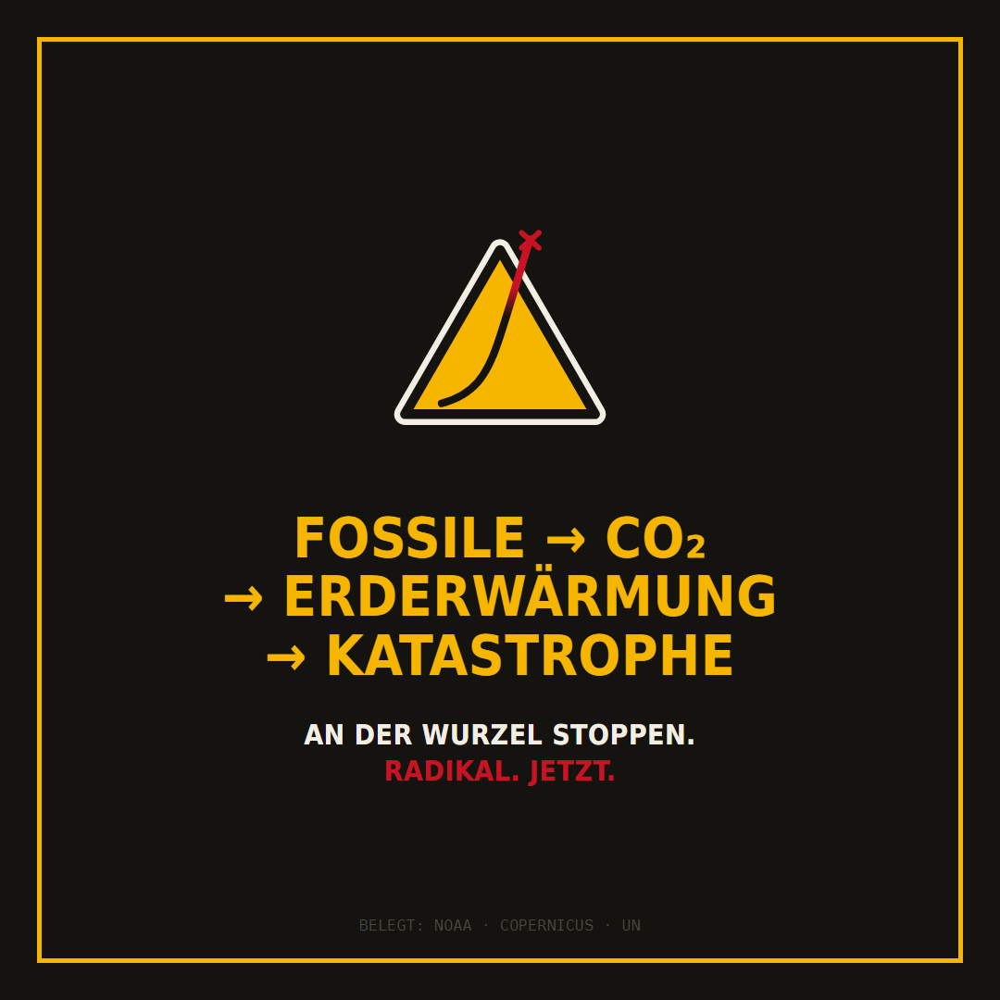
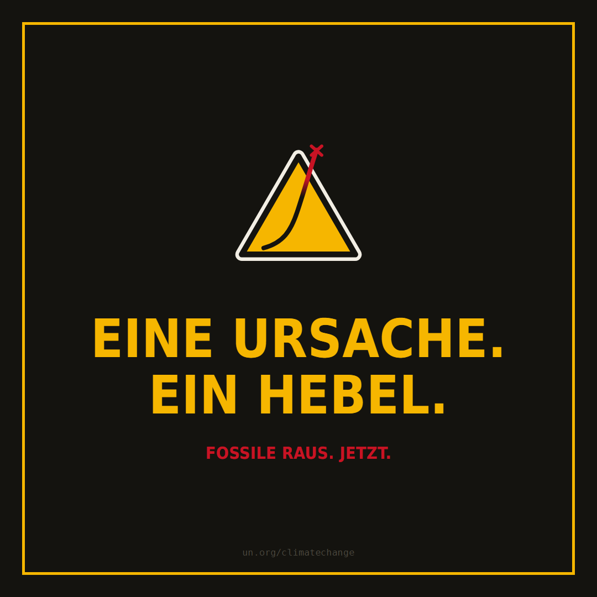
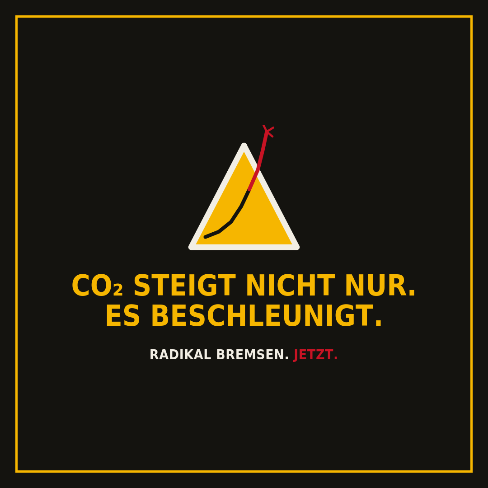

Fossile Energie → CO₂ → Erderwärmung → Katastrophen. Das ist keine Meinung — das ist Physik. Und es wird nicht langsamer, sondern steiler.
Nicht „die Menschheit" irgendwie, nicht „unser Lebensstil" vage. Die Verbrennung fossiler Energie — Kohle, Öl, Gas — verursacht fast 90 % des weltweiten CO₂-Ausstoßes und rund zwei Drittel aller Treibhausgase. Das ist die Wurzel.
Wer die Erderwärmung stoppen will, muss genau hier ansetzen: fossile Energie herunterfahren — radikal, grundlegend, sofort. Alles andere kuriert nur Symptome.
Quelle: Vereinte Nationen — Causes and Effects of Climate Change
Jahr für Jahr stoßen wir nicht nur mehr CO₂ aus — der Anstieg selbst wird steiler. In den 1960ern nahm die CO₂-Konzentration um 0,86 ppm pro Jahr zu, in den 2020ern um 2,63 ppm pro Jahr: mehr als eine Verdreifachung.


Quellen: NOAA GML · Global Carbon Project
2023, 2024 und 2025 lag die globale Mitteltemperatur erstmals in drei aufeinanderfolgenden Jahren über 1,5 °C gegenüber dem vorindustriellen Niveau — der Schwelle des Pariser Abkommens. Europa erwärmt sich dabei mehr als doppelt so schnell wie der globale Durchschnitt.

Quellen: Copernicus C3S · WMO State of the Global Climate
Jedes Zehntelgrad zählt. Mit der Erwärmung nehmen Wetterextreme in Häufigkeit und Wucht zu: längere Hitzewellen, heftigere Starkregen und Hochwasser, ausgedehntere Dürren, brennende Wälder, Ernteausfälle und wirtschaftliche Schäden. Der Ozean speicherte 2025 erneut so viel Wärme wie nie zuvor.
Das verbleibende CO₂-Budget für das 1,5-°C-Ziel reicht bei heutigem Ausstoß rechnerisch nur noch etwa vier Jahre. Es gibt genau eine Maßnahme, die wirkt: fossile Energie radikal und sofort senken.
Alles frei zur Weitergabe: ausdrucken, aushängen, teilen. Klick auf „Herunterladen".




{kind=link}
{kind=link}
{kind=link}
{kind=link}